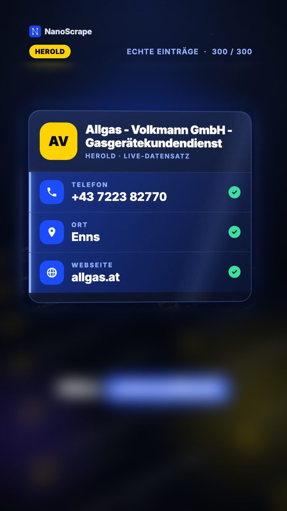

Herold Scraper: Firmendaten aus Österreichs Gelben Seiten exportieren
Du brauchst österreichische Betriebe einer Branche mit Telefon, E-Mail und Adresse, als Tabelle? Der Herold.at Scraper auf Apify holt sie aus Österreichs Gelben Seiten, ohne Code. Hier sind die Eingaben, ein Prompt für Claude und ein echter Lauf: 300 Installateure für 1,55 $.
In diesem Tutorial
Das bekommst du
Herold.at sind Österreichs Gelbe Seiten. Der Herold.at Scraper sucht dort nach Branche und Ort und legt jeden Betrieb als Zeile in einer Tabelle ab. Schon aus der Trefferliste bekommst du:
- Name, Branche, Adresse mit 4-stelliger PLZ und Ort.
- Telefon und E-Mail, wenn der Eintrag sie zeigt. Herold zeigt beides oft direkt in der Trefferliste.
Mit includeDetails öffnet der Actor zusätzlich die Detailseite jedes Betriebs. Dann kommen, soweit vorhanden, Website, Öffnungszeiten, Beschreibung, Koordinaten, Bewertung, Gründungsjahr und Social-Media-Links dazu.
Apify-Konto anlegen
- Öffne die Seite des Herold.at Scrapers auf Apify.
- Klicke auf Try for free und registriere dich mit Google oder E-Mail.
- Du landest in der Apify Console im Tab Input des Actors.
Branche und Ort eintragen
{
"keyword": "Elektriker",
"location": "Wien",
"maxResults": 100,
"includeDetails": false
}keyword: Branche oder Leistung, zum Beispiel „Installateur“, „Tischler“, „Steuerberater“.location: Stadt oder Region, zum Beispiel „Wien“ oder „Graz“. Leer lassen für ganz Österreich.maxResults: wie viele Betriebe höchstens (Standard 100).includeDetails: Detailseiten öffnen für Website, Öffnungszeiten und Koordinaten. Langsamer und teurer, siehe Kosten.
Actor starten
Klicke auf Start. Ohne Detailseiten ist ein Lauf mit 100 Betrieben schnell fertig; mit Detailseiten dauert er länger, weil der Actor jede Seite einzeln öffnet (im Beispiel unten 24 Minuten für 300 Betriebe).
Daten exportieren
Im Tab Output klickst du auf Export und wählst CSV, Excel oder JSON.
Beispiel: Installateure in Österreich

Dieses Beispiel steckt hinter unserem Short zu Installateuren in Österreich. Ein echter Lauf auf Apify (pZ2a21xCRbtuLLgkp, 14.10.2026), Suchbegriff „Installateur“, ohne Ort, mit Detailseiten:
- 300 Betriebe, so viele wie
maxResultserlaubt. Das sind nicht alle Installateure Österreichs; setz den Wert höher für mehr. - Alle 300 mit Telefon, 293 mit Webseite.
- Kosten gemessen: 300 × 0,005 $ + 0,05 $ Start = 1,55 $, dazu 0,065 $ Plattformnutzung. Laufzeit 24 Minuten.
Die Eingabe für Apify (Tab Input, auf JSON umstellen, einfügen, Start):
{
"keyword": "Installateur",
"maxResults": 300,
"includeDetails": true,
"enableContactExtraction": false,
"enableJobExtraction": false,
"enableBrowserFallback": false,
"outputLanguage": "en"
}Oder mit Claude (Einrichtung siehe Claude-Prompt):
Nutze den Apify MCP Server. Starte den Actor santamaria-automations/herold-at-scraper mit dem Suchbegriff "Installateur", höchstens 300 Ergebnissen und Detailseiten (includeDetails true).
Sag mir vor dem Start, was der Lauf kostet, und warte auf mein OK.
Wenn er fertig ist, gib mir eine Tabelle mit Name, Telefon, E-Mail, Website und Ort, sortiert nach Ort.Mit "location": "Wien" grenzt du auf eine Stadt ein. Für einen günstigen ersten Test setz maxResults auf 50: mit Detailseiten etwa 0,30 $ (Schätzung zu denselben Preisen).
E-Mails und Anreicherung
Herold liefert eine E-Mail, wenn der Eintrag eine hat. Für den Rest gibst du die Spalte website (mit includeDetails) in den Website Email Scraper. Mit einem eigenen Gemini-, Groq- oder OpenRouter-Schlüssel kann der Actor außerdem Ansprechpartner (enableContactExtraction) und offene Stellen (enableJobExtraction) von den Firmen-Websites holen; die Kosten dafür rechnet dein KI-Anbieter ab.
Prompt für Claude zum Kopieren
Füge in Claude den Apify MCP Server als eigenen Konnektor mit dieser URL hinzu (siehe Apifys MCP-Dokumentation). Die URL beschränkt Claude auf diesen einen Actor:
https://mcp.apify.com?tools=santamaria-automations/herold-at-scraperDann fügst du diesen Prompt ein und ersetzt Branche und Ort durch deine. Claude nennt dir zuerst die Kosten und wartet auf dein OK, bevor der Lauf startet:
Nutze den Apify MCP Server. Starte den Actor santamaria-automations/herold-at-scraper mit dem Suchbegriff "Elektriker",
Ort "Wien" und höchstens 100 Ergebnissen, ohne Detailseiten.
Sag mir vor dem Start, was der Lauf kostet, und warte auf mein OK.
Wenn er fertig ist, gib mir eine Tabelle mit Name, Telefon, E-Mail, Adresse und PLZ.Getestet haben wir den Actor und die Eingaben, nicht die Prompts über MCP; Claude formuliert die Kostenangabe eventuell anders.
Wichtige Felder
name,category,keywords: Betrieb und Branche.phone,email: Kontakt, oft schon aus der Trefferliste.address,postal_code,city: Adresse.website,opening_hours,description,latitude,longitude: mitincludeDetails.rating_score,rating_count,founding_year,social_links: wenn der Eintrag sie hat.detail_url,source_url: Links zum Eintrag und zur Suche.
Was das kostet
Der Actor rechnet pro Betrieb ab (Preise laut Apify, Stand 19.10.2026):
- Actor-Start: 0,05 $ pro Lauf.
- Betrieb aus der Trefferliste (ohne Detailseiten): 0,002 $.
- Betrieb mit Detailseite (
includeDetails): 0,005 $ statt 0,002 $.
Beispiele: 100 Betriebe aus der Trefferliste = 0,05 $ + 100 × 0,002 $ = 0,25 $. 300 Betriebe mit Detailseiten = 1,55 $ (gemessen, siehe Beispiel oben). Den aktuellen Gratis-Betrag des Free-Plans findest du auf Apifys Preisseite.
Häufige Fragen
Bekomme ich E-Mail-Adressen?
Ja, wenn der Herold-Eintrag eine zeigt; oft steht sie schon in der Trefferliste. Für den Rest gibst du die Website-Spalte in den Website Email Scraper.
Wann brauche ich includeDetails?
Wenn du Website, Öffnungszeiten oder Koordinaten willst. Ohne Detailseiten ist der Lauf schneller und kostet 0,002 $ statt 0,005 $ pro Betrieb.
Warum dauerte der Beispiellauf 24 Minuten?
Mit includeDetails öffnet der Actor für jeden der 300 Betriebe die Detailseite einzeln.
Was kostet der Herold Scraper?
0,05 $ pro Lauf plus 0,002 $ pro Betrieb aus der Trefferliste oder 0,005 $ mit Detailseite. 300 Installateure mit Details kosteten gemessen 1,55 $.
Brauche ich Claude?
Nein. Die Schritte 1 bis 4 funktionieren komplett in der Apify Console. Claude erledigt Kostenprüfung, Lauf und Tabelle nur in einem Schritt.
Geht das für ganz Österreich?
Ja. Ohne location sucht der Actor in ganz Österreich, bis maxResults erreicht ist.
Hinweis zu Datenschutz und Recht
Dieser Actor sammelt Branchen-Einträge, die auf Herold.at öffentlich angezeigt werden. Für personenbezogene Daten (zum Beispiel den Namen eines Einzelunternehmers oder eine private Nummer) bist du verantwortlich. Du musst die DSGVO, österreichische Datenschutz- und Werbegesetze und die Nutzungsbedingungen von Herold einhalten. Prüfe vor Kaltakquise die Regeln und frag im Zweifel eine Anwältin oder einen Anwalt.
Weiterführende Links
- Herold.at Scraper, Actor-Seite: alle Felder und Preise.
- Google Maps Scraper Tutorial: Firmendaten aus Google Maps, weltweit.
- Website Email Scraper: E-Mails auf den gefundenen Webseiten finden.